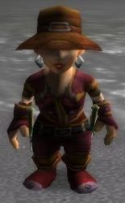

Récits Légendes de Kirin Tor Personnages Célébrités Guildes
Outils Calendrier Calendrier Illustré Mod d'interface
Informations Historiens FAQ Liens Crédits
Les légendes de Kirin Tor
==> Afficher les personnages de squallsolo
Hermiona
 Age : 26
Age : 26
Sexe : Femme
Race : Gnome
Faction : Alliance
Formation : Guerrier
Description : Hermiona est née as Thelsamar apres la chute de Gnomeregan. Son père Zimyor etait un soldat et sa mère Nellya aide soignante ils se sont rencontrés dans un camp de refugiés Gnome aux abords du loch modan et ne se sont plus jamais quittés. Ils eurent 3 enfants, 2 filles, Hermiona et Ticia et 1 Garçon, Bilban. Hermiona est l'ainé de la famille et a montré des son plus jeune age de grandes aptitudes a l'ingenierie et comme sont père elle voulu devenir garde de Kharanos. A suivre....
Plus d'infos sur Hermiona >>>
Samwise
Age : 30Sexe : Homme
Race : Gnome
Faction : Alliance
Formation : Guerrier
Description : Anotation de larchéologue : Ce texte est la préface dun journal découvert dans les Ruines de Jubuwal au sud dAzeroth. Avec le journal on na retrouvé divers objet mais aucune armes ou ossement.
Salutation lecteur ! Si vous lisez ceci c'est que je suis mort ou que ce journal de voyage vous est parvenu d'une quelconque façon. Pour mieux comprendre les pages qui suivent voici un petit descriptif de qui je suis:
Je me nomme Samwise Gamije je suis un Gnome et je suis née au Loch Modan après la chute de Gnomeregan. Mes parents moururent alors que je n'étais qu'un nourrisson. J'ai donc étais élevé par un couple de Nains Olim et Helga Gamije. Ils mon Enseigné le savoir des Nains comme si j'étais leur véritable Fils. Des que je fut en âge de comprendre mes parents adoptif me racontèrent la vérité sur mes origines. Et de la mort tragique de mes parents lors d'une embuscade de la Horde. Jai rapidement choisi la voie du Guerrier comme mon père adoptif, qui était un des gardes du Loch Modan et mappris le maniement de lépée et de la hache de guerre. Cest à lâge de 30 ans que jai décidé de partir en voyage initiatique où les diverses péripéties que jai eux et ma jeunesse sont décrites en détail plus loin dans ces pages...
Plus d'infos sur Samwise >>>
Ticia
Age : 24Sexe : Femme
Race : Gnome
Faction : Alliance
Formation : Voleur
Description : Ticia est la petite soeur d'Hermione.
elle est née a Thelsamar, et à montrer des son plus jeune âge des aptitudes au crochetage, et décidera de devenir une voleuse n'aimant guère le combat pur et dur cette voie lui etait donc tracer !!! Elle acompagne deshormait sa grande soeur dans ses aventures !!!
Plus d'infos sur Ticia >>>
Riddanir
Age : 1600Sexe : Homme
Race : Elfe
Faction : Alliance
Formation : Chasseur
Plus d'infos sur Riddanir >>>
Garmoss
 Age : 40
Age : 40
Sexe : Homme
Race : Tauren
Faction : Horde
Formation : Druide
Description : Je suis un Shu'Alo que tous connaissent sous le nom de Tauren. Je suis née au village Bloodhoof, qui se situe au sud de Thunder Bluff nôtres capitale dans les plaines de Mulgore.
Ma mère se nommée Kiria, et mon père Monga. Ils me nommèrent Garmoss en l'honneur d'un de mes ancêtres qui avait jadis combattu les centaures. J'ai grandie dans la culture Druidique de mes parents, et au cours des années, j'en suis devenue un moi même. C'est lors de ma cérémonie de passage que mes parents furent tués par les Humains de Kul'Tiras, alors que je devenais Druide les traîtres chargèrent le village de Tranchecolline et tuaient a vue tous non Humain. Mes parents périrent alors qu'ils défendaient un groupe d'enfants Orc qui fuyaient. Je pris part a la bataille pour sauver les enfants qui pure fuir vers Orgrimmar. Ce fut ma première bataille et celle que je n'oublierais jamais. Chaque jour je prie la terre mère pour quelle continue à protéger les esprits de mes parents, de mes ancêtres et guide mon chemin.
Plus d'infos sur Garmoss >>>
Lire le récit de Garmoss >>>
Throndin
Age : 75Sexe : Homme
Race : Nain
Faction : Alliance
Formation : Guerrier
Plus d'infos sur Throndin >>>
==> Voir la galerie d'images de squallsolo